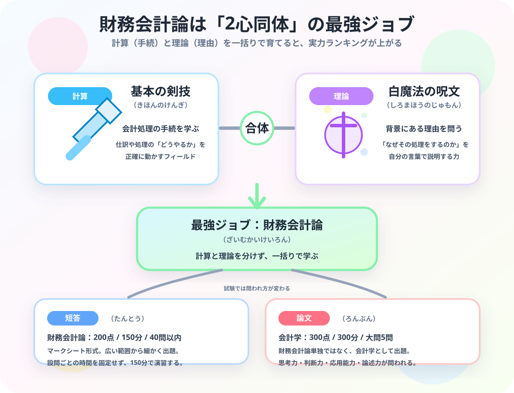

財務会計論（計算・理論）とは？
短答式・論文式の役割をRPGで解説
- 財務会計論は「計算（手続）」と「理論（理由）」のセット科目。分けて学ぶより合体させるほうが速い。
- 短答式（配点約80点・500点満点中）は細かい罠を見抜くマークシート戦。1問3分が目安。
- 論文式（配点約110点・700点満点中）は180分で記述するボス戦。丸暗記ではなく本質理解が全て。

財務会計論は「手続」と「理由」のセットです
財務会計論（計算）は「会計処理をどう進めるか」の手続を学ぶ科目です。財務会計論（理論）は「なぜその処理をするのか」という背景の理由を問う科目です。この2つは別物のように見えて、実は表裏一体です。
僕が勉強し始めたとき、最初は「計算は計算、理論は理論」として別々に詰め込もうとしていました。でも、それをやると両方の進みが遅くなるんです。計算で手を動かしながら「なんでこの処理なんだろう」と理論に目を向けると、どちらも定着が一気に速くなります。
⚔ 基本の剣技・手続
会計処理をどう進めるかを学ぶ領域です。RPGでいえば、攻撃コマンドを正確に出すための基本の剣技。毎日触れないとサビます。
✨ 白魔法・理由の呪文
なぜその処理をするのかを学ぶ領域です。表面の形ではなく、処理の奥にある理由を支える白魔法。論文では特にここが問われます。
計算と理論を一括りとして往復させながら学ぶことで、財務会計論全体の実力が効率よく上がります。計算だけ、理論だけを分断して詰め込もうとするのは遠回りです。
「なぜ？」を持つと、初見ダンジョンで崩れにくくなります
たとえば減価償却で、僕がやらかした話があります。
「建物は100万円で買ったから、買ったときに費用100万円！」と思ってしまいがちです。でも会計はそうしません。「建物は何年も使って収益を生み続けるから、使う期間にわたって少しずつ費用を対応させる」という理由があるから減価償却が存在するんです。
この「なぜ取得時に一括費用化せず、毎年少しずつ費用を計上するのか」という理由を自分の言葉で説明できると、角度を変えた初見の応用問題でも全滅しなくなります。最初は仕訳の形から入って全然大丈夫です。でも最終的には「なぜ」まで言える状態を目指してほしいです。
焦らなくて大丈夫です。計算で手を動かして、理論で理由を言葉にする。この往復ができるようになると、財務会計論はただの暗記地獄から、自分で攻略できる冒険に変わっていきます。
短答式と論文式では、同じ理論でも全く別の戦い方が必要です
財務会計論の理論は、短答と論文で求められることが真逆といっていいくらい違います。これを知らないまま勉強を進めると、短答の感覚のままで論文に臨んで「全然書けない……」という状態になります。僕もそれをやりました。普段の問題集の解き方も、どっちの試験を意識しているかで変えることが大事です。
| 試験 | 特徴・数字 | 大谷の正直な感想と攻略の方向性 |
|---|---|---|
| 短答式試験 財務・理論 |
配点約80点（全体500点満点中）。マークシート形式。1問3分以内・理論全体で30分が目安。細かい用語の入れ替えや微妙なひっかけが広範囲から出る。 | 「わかった気」が一番危ない試験です。知っている単語が出た瞬間に正しいと思い込んで、細かい語尾や条件の違いを読み飛ばして失点します。「×の選択肢がなぜ×なのか」の理由を声に出して説明できるまで追いかけるのが唯一の対策です。 |
| 論文式試験 財務・理論 |
配点約110点（全体700点満点中）。大問3問・180分。実際に文章を記述する形式。細かい暗記より、思考力・判断力・応用能力・論述力が問われる。 | 180分の長丁場は体力と精神力の削り合いです。そしてここが短答と根本的に違うところで、「なんでその処理をするか」を文章で説明できないと点が入りません。語尾の暗記が全く使えず、本質理解だけが頼りになるボス戦です。 |
短答ダンジョン
広い範囲から細かい罠が大量に飛んでくるマークシート戦。「なんとなく合ってる」で進むと後半で大崩れします。罠の理由を言えるまで復習するのが鉄則です。
論文ボス戦
180分で文章を書き続けるボス戦。丸暗記はほぼ通用しません。「会計処理の理由」を自分の言葉で展開できる力が、ここで初めて全力で問われます。
問題集を解くときの王道攻略法
まとめ：財務会計論は、計算と理論を合体させて育てる科目です
- 財務会計論（計算）は、会計処理の手続を学ぶ領域。毎日触れないとサビる。
- 財務会計論（理論）は、処理の背景にある理由を問う領域。「なぜ」が鍵。
- 計算と理論を往復させながら学ぶと、両方が速く定着する。
- 短答式（配点約80点）は細かい罠を見抜くマークシート戦。×の理由を言語化する。
- 論文式（配点約110点）は180分の記述ボス戦。丸暗記ではなく本質理解が全て。
財務会計論は、最初は巨大すぎるボスに見えます。でも、計算の手続と理論の理由がつながった瞬間、「あ、これ戦えるわ」と視界が開ける科目です。毎日の学習記録を積み上げながら、少しずつ会計士ジョブを育てていきましょう。
この記事、財務会計論の攻略に使えましたか？
計算と理論の往復で実力が上がる感覚が伝わったなら、この下にある【いいねボタン】をポチッと押してもらえると、めちゃくちゃ嬉しいです！
皆さんの一押しが、次の攻略記事を書く力になります。一緒に合格の旗を立てましょう！
⚔ 会計ギルドで、今日の冒険を始めよう
登録不要・完全無料。財務会計論の勉強時間が経験値に変わり、キャラクターが成長します。